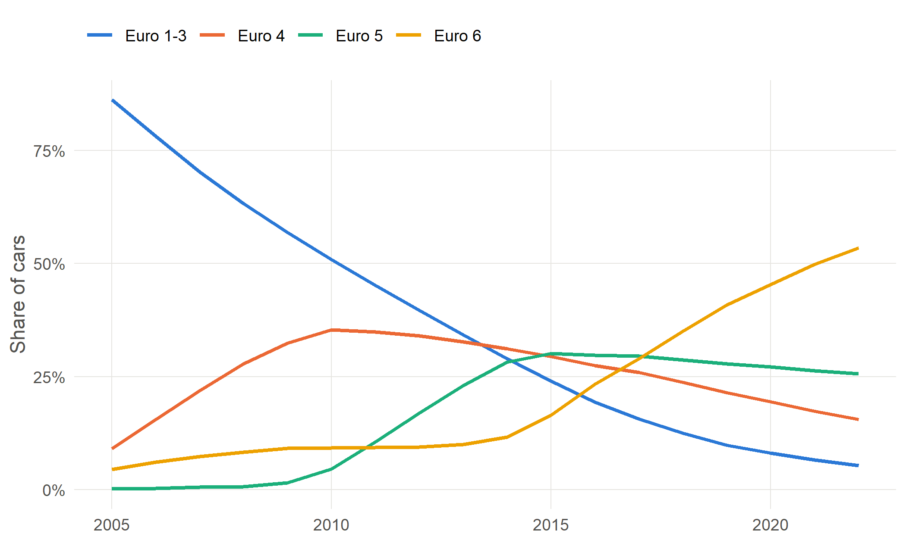

| Area | Cars | Electric | Share |
|---|---|---|---|
| North West London (NW) | 271,728 | 13,170 | 4.8% |
| West London (W) | 109,616 | 5,060 | 4.6% |
| Watford (WD) | 169,539 | 5,190 | 3.1% |
| Milton Keynes (MK) | 400,160 | 11,479 | 2.9% |
| South West London (SW) | 193,867 | 5,275 | 2.7% |
| Oxford (OX) | 412,536 | 10,695 | 2.6% |
| Kingston upon Thames (KT) | 325,443 | 8,367 | 2.6% |
| St Albans (AL) | 171,984 | 4,381 | 2.5% |
16 Worked examples: spreadsheets
These examples use only the aggregate tables and a spreadsheet. The steps are written for Excel; other spreadsheets work the same way. The results shown were calculated from the same files, so you can check your answer against them.
16.1 Example 1: average car mileage by postcode area
Question: How far is the average car driven in each postcode area, and which areas have the highest and lowest mileage?
File: tables/mileage/mileage_by_pca_year_body_fuel.csv
Steps:
- Open the file and insert a PivotTable (Insert › PivotTable).
- Add
yearandbody_typeto Filters, and choose2022andCars. (2022 rather than a later year: see Chapter 14, pitfall 2.) - Add
pcato Rows. Then use the row filter to untickunborn,unknown,deadandXX, which are not postcode areas. - Add
total_legit_mileageandn_legit_mileageto Values, both as Sum. - Next to the PivotTable, divide the first sum by the second to get average miles per car. (Or add a Calculated Field: PivotTable Analyze › Fields, Items & Sets › Calculated Field, with the formula
= total_legit_mileage / n_legit_mileage.) - Sort by the average.
Result: the national average is 6,620 miles per car.
| Area | Cars with plausible mileage | Miles per car |
|---|---|---|
| Northern Ireland (NI) | 968,050 | 7,908 |
| Luton (LU) | 204,149 | 7,409 |
| Perth (PH) | 96,625 | 7,268 |
| Galashiels (TD) | 59,709 | 7,224 |
| Peterborough (PE) | 593,526 | 7,185 |
| Area | Cars with plausible mileage | Miles per car |
|---|---|---|
| Sutton (SM) | 69,771 | 5,212 |
| South West London (SW) | 171,474 | 5,249 |
| Bromley (BR) | 132,855 | 5,298 |
| South East London (SE) | 257,228 | 5,621 |
| Kingston upon Thames (KT) | 296,526 | 5,623 |
ImportantThe wrong way
Each row of the file is one fuel group in one area. If instead you add a column of averages for each row and take the average of that column, every row counts equally, including rows of a handful of fuel cell cars. Done that way, the “national average” comes out at 7,196 miles rather than 6,620. Always sum totals and counts first, then divide.
Interpreting it: low averages in London, and high ones in more rural areas, are what you would expect. Northern Ireland, at the top, is tested differently from Great Britain (Chapter 14, pitfall 11), so compare it with care. Remember that these are cars tested in each area (Chapter 7), that each postcode area mixes very different places, and that taxis and private hire cars, which are driven far further, are concentrated in cities.
16.3 Example 3: the fleet by Euro standard
Question: How has the share of cars meeting each Euro standard changed?
File: tables/profile/a1_counts_cars.csv. This is a wide table: one row per year, and one column for each category of each characteristic, named characteristic: category.
Steps:
- Open the file. Hide or delete the columns you don’t need, keeping
yearand theeuro_standard: ...columns. - Add a column adding up the Euro standard columns for each year, and divide each column by it to get shares.
- Select the year column and the share columns, and insert a line chart.

Interpreting it: the chart shows each standard rising as new cars meet it and falling as those cars age and leave the fleet. The profile tables count only cars with a plausible mileage that year, and exclude Northern Ireland.
ImportantSpotting a problem: Euro 6 cars in 2005
The chart shows 4.5% of cars as Euro 6 in 2005, nearly ten years before the standard existed. These are not real. They are cars whose Euro status was missing and was filled from similar vehicles (the same make, model, birth year and fuel), where a single wrong value recorded for one vehicle was copied to the rest of its group. The vehicle table flags them with euro_check = 'later_than_date'.
This is a good example of why you should check where values come from before relying on them. Most Euro standards in the data are filled or assumed rather than recorded; the euro_source: ... columns of the same table show how many of each. For a defensible analysis of Euro standards, use the vehicle table and exclude or correct values flagged later_than_date (Chapter 14, pitfall 7).
NoteTo be written
Further examples: a time series of car mileage for one area against the national average; using the churn tables to find the areas whose cars move most; joining CARS figures to local authority data through a postcode area lookup.